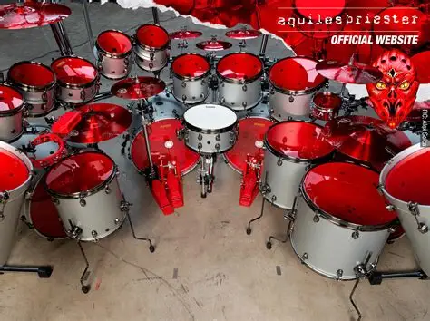
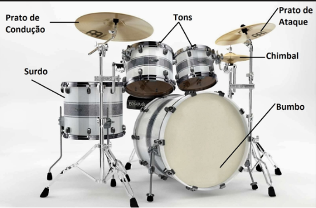

Uma das aulas de arte foi concedida aos alunos Cauã Passos, Arthur Dylan, Pietro e Pedro Henrique, nossos colegas de classe, para nos ensinar sobre a arte da música. Nós aprendemos principalmente sobre harmonia e no final da aula fizemos um exercício para por em prática o que aprendemos sobre leitura e partitura e ritmo.
Fonte: Pedro Viera
Durante a aula, nós aprendemos os conceitos por trás da harmonia e do ritmo. A música ocidental divide as infinitas frequências possíveis em 7 notas principais e 4 sustenidos. Quando duas notas são tocadas simultaneamente ou uma atrás da outra um intervalo é criado. Existem diferentes tipos de intervalos e a junção de dois ou mais intervalos forma um acorde. Logo após os conceitos da harmonia serem contextualizados, entendemos como ler e criar partituras básicas para bateria, como é a estrutura básica de uma bateria e descobrimos alguns bateristas que fogem da forma convencional de montar uma bateria.
Após a aula, fizemos algumas atividades. Primeiro, simulamos as batidas de uma bateria na mesa para praticarmos o tempo. Depois, criamos uma pequena parte de uma partitura e o professor nos ajudou a ler essa parte e julgou o quão interessante ficou.

